Since first using Python during my UCL London exchange, as I've improved my data analysis skills, I've also developed a taste for photographing the 39 countries I've visited. Below is a selection.
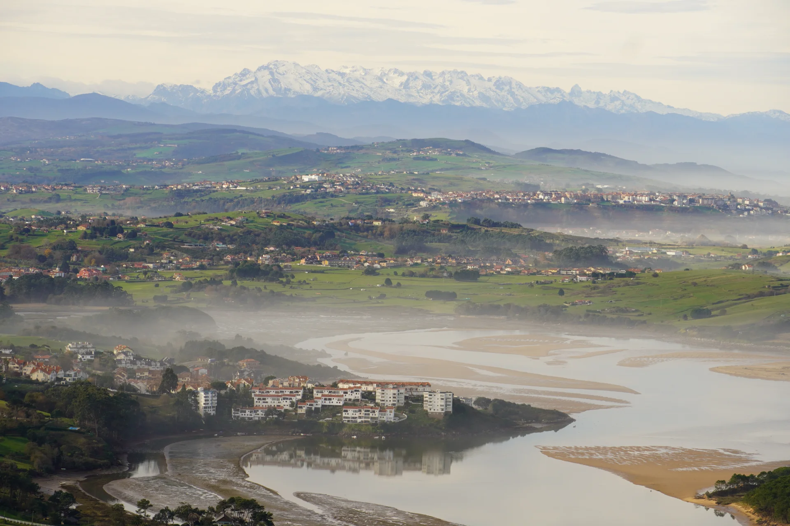
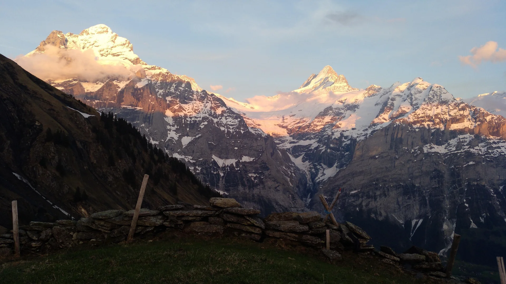
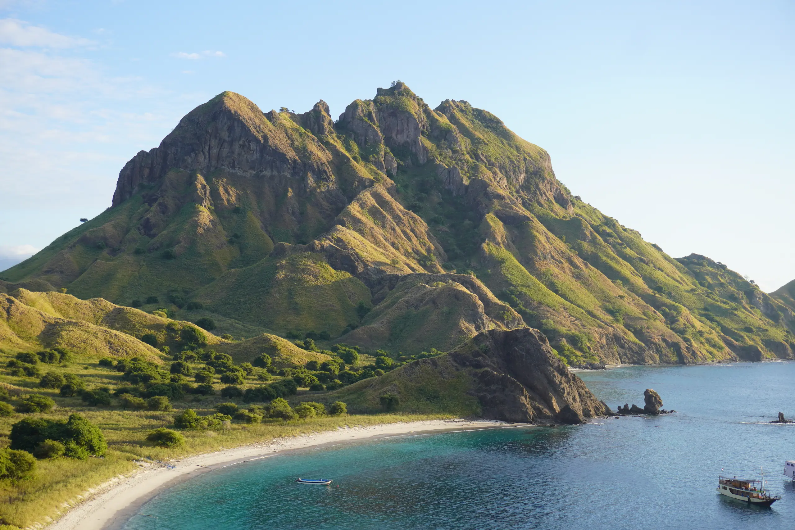
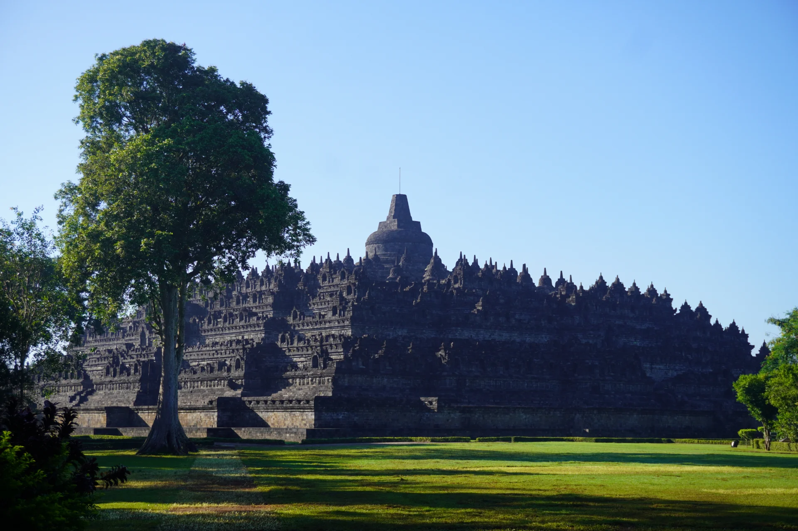
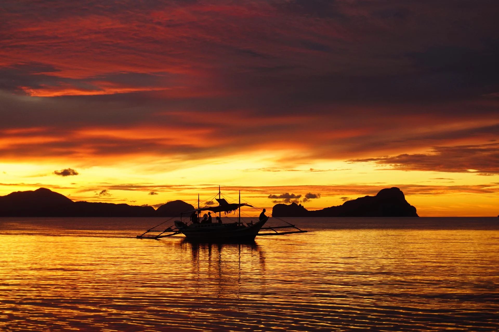
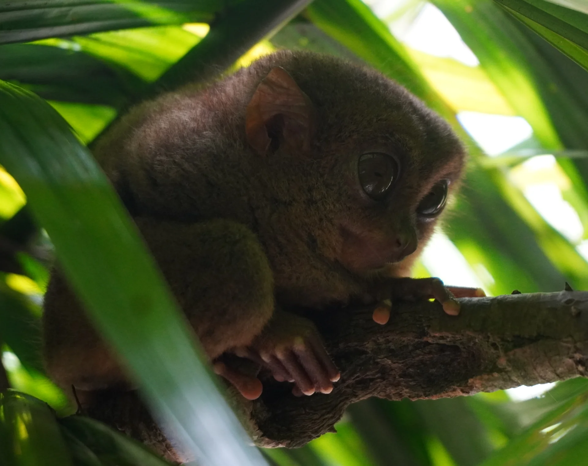
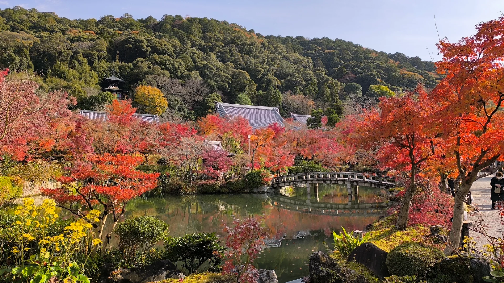
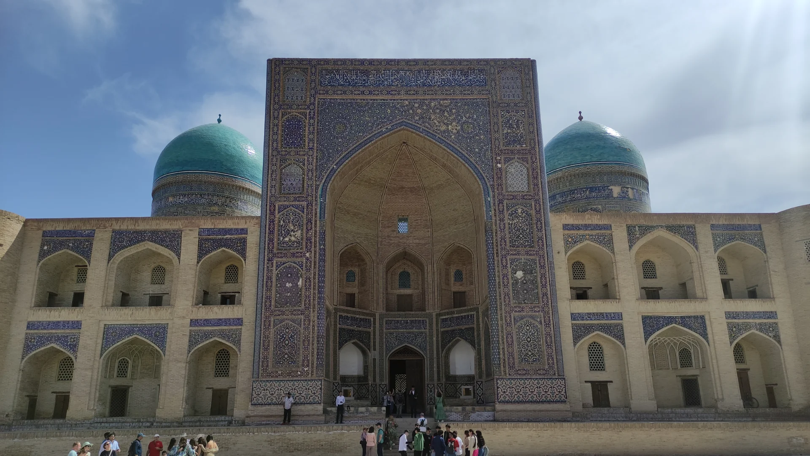
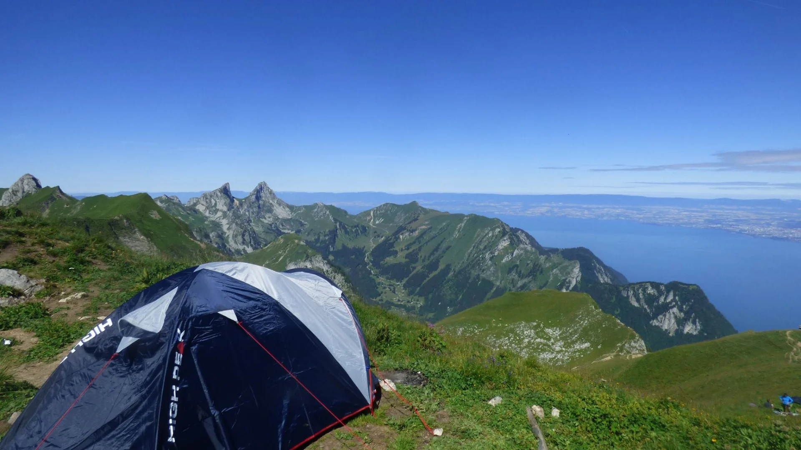
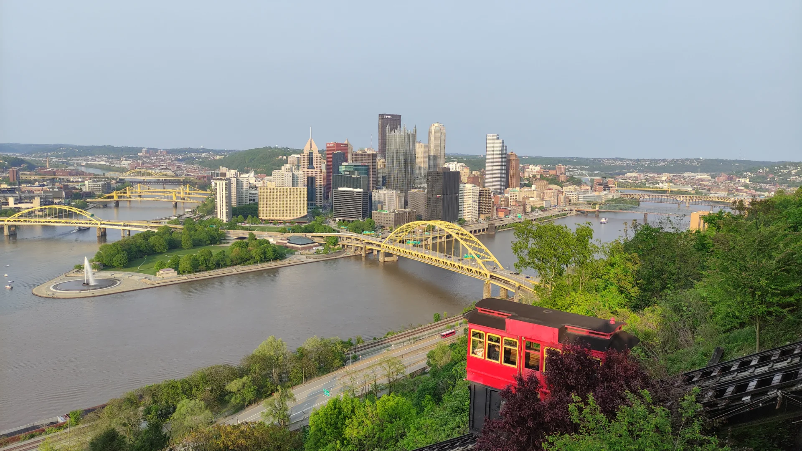
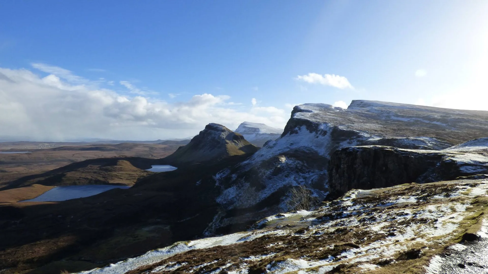
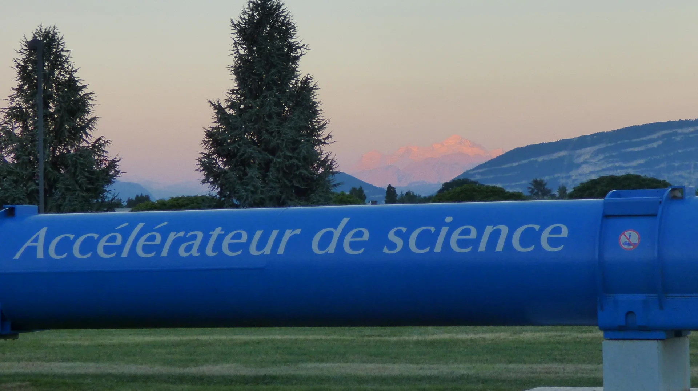